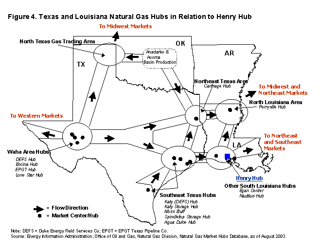

|
| "This special report looks at the current
status of market centers/hubs in today's natural gas marketplace, examining their role and their
importance to natural gas shippers, marketers, pipelines, and others involved in the transportation
of natural gas over the North American pipeline network. Questions or comments on the contents
of this article should be directed to James Tobin at james.tobin@eia.doe.gov or (202) 586-4835." |
|
The establishment of market centers and hubs is a rather recent development in the natural
gas marketplace. They evolved, beginning in the late 1980s, as an outgrowth of gas market
restructuring and the execution of the Federal Energy Regulatory Commission's (FERC)
Order 636 issued in 1992. Order 636 mandated that interstate natural gas pipeline companies
transform themselves from buyers and sellers of natural gas to strictly gas transporters.
Market centers and hubs evolved to provide new gas shippers with many of the physical
capabilities and administrative support services formally handled by the interstate pipeline
company as "bundled" sales services. (For simplicity, in the remainder of this report the
term "market center" will be used to refer to either a center or hub except when the
proper name for the center is referred to as a "Hub").
Two of the key services offered by these new centers included transportation between and
interconnections with other pipelines, and the physical coverage of short-term receipt/delivery
balancing needs.(1) These centers also developed new and unique services that
helped expedite and improve the gas transportation process overall. For instance, many centers
developed Internet-based access to gas trading platforms and capacity release programs, and
provided title transfer services between parties that buy, sell, or move their gas through the center.
Changes in the Natural Gas Market Center Segment
There are currently 37 operational market centers in the United States and
Canada (Figure 1), compared with 39 in 1996. (2) Nine of them are in Canada
(all that were operational in 1996 still are). Twenty-eight centers are
located in the United States, compared with 30 in 1996. Although the number
of operational centers in the United States and Canada has remained essentially
the same since 1996, there has been a significant change in their overall
profile. Highlights include:
-
Between 1997 and 2003, six new market centers became active
in the United States (Table 1). The newest centers to be activated
(2003) are the ANR Joliet Hub and Colorado Interstate Gas Company's
Cheyenne Hub. The ANR Joliet Hub is located in the northern Illinois
area, where previously the NICOR's Chicago Market Center dominated,
while the Cheyenne Hub is located at the edge of the expanding coalbed
methane production area of eastern Wyoming.
- During the same period, eight market centers in the United States were
deactivated, primarily because of a lack of trading (i.e., liquidity)(3)
and overall throughput volumes. The two largest of the closed centers
were the former Columbia Gas Center,(4) which served
the New York and Pennsylvania areas, and the Texaco Gulf Star Center,
which operated in southern Louisiana near the Henry Hub.
- Over the same time frame, 12 market centers changed ownership, with
most of the changes occurring in the past 3 years. Several of these centers
became inactive after changing ownership. For example, two sites once
associated with Enron were deactivated as the new owners found that providing
market center services did not fit in with their revised business model.

- Many market centers have had to alter or improve the type of services they offer as the gas transportation market has become more competitive. A driving force for this has been that customer needs have changed, especially with the closing of most energy trading platforms and the demise of many gas marketing firms. Most centers now provide their customers with access to their services (nominating, parking/loaning, etc.) via the Internet (Table 1). Some also provide their customers with some buyer/seller matching services and limited gas trading.
- Since 1996, five proposed hubs have been canceled. All of these potential market centers were predicated upon the development of underground natural gas storage facilities that did not garner sufficient market interest or could not receive regulatory approval. Although there are currently three "proposed" market centers/hubs pending, two in Alabama and one in Mississippi, none is expected to become active until 2006-07 at the earliest. All three are associated with proposed new high-deliverability storage facilities that have yet to be approved by FERC.
The financial difficulties of many gas marketing companies in recent years and the cessation of activity by most of the major Internet-based energy trading platforms, precipitated by the Enron collapse in 2001, may have had a negative short-term impact on the level of business transactions conducted at gas market centers.(5) However, many companies that previously used the services of gas marketers and trading platforms subsequently contracted directly with gas market centers to have them take over the management and arrangement of their transportation needs in the center's operational area. By mid-2003, most market centers reported that transportation volumes and overall business levels at their centers matched or exceeded previous levels.
Table 1. Administrative Profile of Operational Natural Gas Market Centers
Located in the United States
|
Region/State
/Province |
Market Center |
Administrator |
On Line
Web Service |
Type of
Infrastructure |
Type of
Operation |
Year
Started |
Associated
Storage Sites |
| Central |
|
|
|
|
|
|
|
| Colorado |
Cheyenne
Hub |
Colorado
Interstate
Gas Co. |
CIG-Xpress |
Header |
Market Hub |
2000 |
Huntsman/
Young/Litigo |
| Wyoming |
Opal Hub |
Williams Field
Services Co. |
GasKit |
Header |
Production Hub |
1999 |
None |
| Kansas |
Mid-
Continent
Center |
Oneok Gas
Transportation LLC |
Fax-Phone
Only |
Partial Pipeline |
Market Center |
1995 |
Brehm/Richfield |
| |
|
|
|
|
|
|
|
| Midwest |
|
|
|
|
|
|
|
| Illinois |
ANR Joliet Hub |
ANR Pipeline Co. |
Gems |
Partial Pipeline |
Market Center |
2003 |
System Linepack Only |
| Illinois |
Chicago Hub |
Enerchange Inc. |
"Gas Exchange" |
Partial Pipeline |
Market Center |
1993 |
All NICOR Sites |
| |
|
|
|
|
|
|
|
| Northeast |
|
|
|
|
|
|
|
| New York |
Iroquois Center |
Iroquois Gas Trans Co. |
Iroquois Online |
Entire Pipeline |
Market Center |
1996 |
System Linepack |
| Pennsylvania |
Dominion Hub |
Dominion Transmission Inc. |
EScript |
Entire Pipeline |
Market Center |
1994 |
All Dominion Sites |
| Pennsylvania |
Ellisburg-Leidy Center |
National Fuel Gas Supply Co. |
SBSPRD |
Partial Pipeline |
Market Center |
1993 |
NFGS Sites/Stagecoach/Seneca Lake |
| |
|
|
|
|
|
|
|
| Southwest |
|
|
|
|
|
|
|
| Louisiana |
Egan Hub |
Egan Hub Partners LP |
LINK System |
Header |
Market Hub |
1995 |
Egan Storage |
| Louisiana |
Henry Hub |
Sabine Hub Services Inc. |
Yes |
Header |
Market Hub |
1988 |
Jefferson Island/Sorrento |
| Louisiana |
Nautilus Hub |
Shell Gas Transmission Co. |
CAMINUS |
Header |
Production Hub |
2000 |
None |
| Louisiana |
Perryville Center |
Centerpoint Energy Gas Trans Co. |
ServiceLynx |
Partial Pipeline |
Market Center |
1994 |
Ruston/Ada/Childes
/Bistineau |
| New Mexico |
Blanco Hub |
Transwestern Gas Pipeline Co. |
HotTap |
Header |
Market Center |
1993 |
System Linepack Only |
| East Texas |
Agua Dulce Hub |
ConocoPhillips Inc. |
Fax-Phone Only |
Header |
Production Hub |
1990 |
None |
| East Texas |
Carthage Hub |
Duke Energy Field Services Co. |
AltraWeb |
Header |
Market Hub |
1990 |
Indirect Only |
| East Texas |
Katy (DEFS) Hub |
Duke Energy Field Services Co. |
Fax-Phone Only |
Header |
Market Hub |
1995 |
None |
| East Texas |
Katy Storage Center |
Enstor Inc. |
Yes |
Header |
Market Hub |
1993 |
Katy/Stratton Ridge |
| East Texas |
Moss Bluff Hub |
Moss Bluff Hub Partners LP |
LINK System |
Header |
Market Hub |
1994 |
Moss Bluff |
| East Texas |
Spindletop Storage Hub |
Centana Intrastate Pipeline Co. |
Fax-Phone Only |
Header |
Market Hub |
1998 |
Spindletop |
| West Texas |
Waha (EPGT) Texas Hub |
El Paso Texas Pipeline LP |
StarWeb |
Partial Pipeline |
Market Hub |
1995 |
Boling Site |
| West Texas |
Waha (DEFS) Hub |
Duke Energy Field Service Co. |
Fax-Phone Only |
Header |
Market Hub |
1995 |
None |
| West Texas |
Waha (Encina) Hub |
Sid Richardson Gas Co. |
Fax-Phone Only |
Partial Pipeline |
Production Hub |
1995 |
None |
| West Texas |
Waha (Lone Star) Hub |
TXU Lone Star Gas Co. |
CAMINUS |
Header |
Market Hub |
1995 |
Keystone |
| |
|
|
|
|
|
|
|
| Western |
|
|
|
|
|
|
|
| California |
California Energy Hub |
Southern California Gas Co. |
ENVOY |
Partial Pipeline |
Market Center |
1994 |
All SoCal Fields |
| California |
Golden Gate Center |
Pacific Gas & Electric Co. |
PipeRanger |
Entire Pipeline |
Market Center |
1996 |
All PG&E Fields & Linpack |
| Idaho |
Kingsgate Center |
PG&E Gas Transmission - NW |
ETran System |
Partial Pipeline |
Market Hub Services |
1994 |
System Linepack Only |
| Oregon |
Malin Center |
PG&E Gas Transmission - NW |
ETran System |
Partial Pipeline |
Market Hub Service |
1994 |
System Linepack Only |
| Oregon |
Stanfield Center |
Pacific Gas Transmission Co. |
ETran System |
Partial Pipeline |
Market Hub Services |
1994 |
System Linepack Only |
| |
|
|
|
|
|
|
|
| Canada |
|
|
|
|
|
|
|
| Alberta |
AECO-C Hub |
EnCana Energy Co. |
AECO-LINK |
Partial Pipeline |
Market Center |
1990 |
Suffield/Dunvegan/Carbon |
| Alberta |
Alberta Hub |
Enstor - PPM Energy Inc. |
Fax-Phone Only |
Header |
Market Hub |
1997 |
Alberta Hub |
| Alberta |
Alberta Market Center |
Atco Gas Services Ltd. |
Fax-Phone Only |
Header |
Market Hub |
1998 |
Carbon Facility |
| Alberta |
Crossfield Hub |
Crossalta Gas Storage & Services |
Fax-Phone Only |
Header |
Market Hub |
1995 |
East Crossfield |
| Alberta |
Empress Center |
Transcanada Gas Pipeline Ltd. |
NRGhighway |
Header |
Market Hub |
1986 |
Linepack |
| Alberta |
Intra-Alberta Center |
Transcanada Gas Pipelines Ltd. |
NGX Trading System |
Entire Pipeline |
Market Center |
1994 |
Indirect Only |
| British Columbia |
Sumas Center |
Westcoast Pipeline Co. |
WestFlo |
Partial Pipeline |
Market Hub |
1994 |
Aitken Creek |
| Alberta=>Quebec |
TransCanada Center |
Transcanada Gas Pipelines Ltd. |
Nrghighway |
Entire Pipeline |
Market Hub |
1998 |
Indirect Only |
| Ontario |
Dawn Market Center |
Union Gas Ltd. |
Union Online |
Entire Pipeline |
Market Hub |
1985 |
Dawn (20 fields) |
|
Source: Energy Information
Administration, Office of Oil and Gas, Natural Gas Division, natural Gas
Hubs database,
as of August 2003. |
What Constitutes a Market Center?
The defining characteristics of a natural gas market center are that it provides customers (shippers and gas marketers primarily) with receipt/delivery access to two or more pipeline systems, provides transportation between these points, and offers administrative services that facilitate that movement and/or transfer of gas ownership. While interstate pipeline companies have had to provide hub-type services (per FERC Order 637), such as parking and lending,(6) since 2000, they do not operate as or provide many of the other ancillary services usually associated with market centers
(see Box, "Market Center Services," below).
| "Market Center Services"
The types of services offered by market centers and hubs vary significantly. No two operations are identical in the services offered, and in fact, the features of similarly named services often differ in meaning and inclusions. The list below provides only some of the general types of services offered. The definitions were obtained from the Federal Energy Regulatory Commission.
Transportation/Wheeling - Transfer of gas from one interconnected pipeline to another through a header (hub), by displacement (including exchanges), or by physical transfer over the transmission of a market center pipeline. Parking - A short-term transaction in which the market center holds the shipper's gas for redelivery at a later date. Often uses storage facilities, but may also use displacement or variations in linepack. Loaning - A short-term advance of gas to a shipper by a market center that is repaid in kind by the shipper a short time later. Also referred to as advancing, drafting, reverse parking, and imbalance resolution. Storage - Storage that is longer than parking, such as seasonal storage. Injection and withdrawal operations may be separately charged. Peaking - Short-term (usually less than a day and perhaps hourly) sales of gas to meet unanticipated increases in demand or shortages of gas experienced by the buyer. Balancing - A short-term interruptible arrangement to cover a temporary imbalance situation. The service is often provided in conjunction with parking and loaning. Title Transfer - A service in which changes in ownership of a specific gas package are recorded by the market center. Title may transfer several times for some gas before it leaves the center. The service is merely an accounting or documentation of title transfers that may be done electronically, by hard copy, or both. Electronic Trading - Trading systems that either electronically match buyers with sellers or facilitate direct negotiation for legally binding transactions. A market center or other transaction point serves as the location where gas is transferred from buyer to seller. Customers may connect with the hub electronically to enter gas nominations, examine their account position, and access E-mail and bulletin board services. Administration - Assistance to shippers with the administrative aspects of gas transfers, such as nominations and confirmations. Compression - Provision of compression as a separate service. If compression is bundled with transportation, it is not a separate service. Risk Management - Services that relate to reducing the risk of price changes to gas buyers and sellers, for example, exchange of futures for physicals. Hub-to-Hub Transfers - Arranging simultaneous receipt of a customer’s gas into a connection associated with one center and an instantaneous delivery at a distant connection associated with another center.
|
The operational infrastructure of the market center may vary (Figure 2). Currently, 18 of the 37 active centers can be described as header systems, with relatively short distances between pipeline transfer points and other facilities such as storage (Table 1). Examples of "headers" that also operate as full service centers include the Henry Hub and the Egan Hub in Louisiana and the several Katy area centers in eastern Texas. These facilities provide parking and loaning of gas, balancing, and intra-hub transfers of gas, in addition to the transportation and interchange services of a hub.
The remaining (19) gas market centers are associated with and use all,
or a sizable portion, of a single pipeline system to carry out their operations
and provide transportation services. Two good examples of such operations
are the Ellisburg-Leidy Market Center in the U.S. Northeast and the Dawn
Hub in Ontario, Canada. Both centers support the interchange of gas for
their customers via the many interconnections and delivery points on their
associated pipeline system.
Several market centers (4) mostly confine their operations to providing transportation services to gas producer clients, dispatching their production volumes onto the mainline transmission grid. A good example of such a production service center is the Waha (Encina) Hub in southwest Texas (Table 1). This facility mainly offers pipeline interchange and transportation services to producers in the Permian Basin, directing their product to interconnecting interstate pipelines directly, or indirectly though one of the larger market centers located nearby.
Other "production service" centers include: the Nautilus center, located in southern Louisiana at the terminus of a major route for gas flowing from the Gulf of Mexico; the Agua Dulce center, located in southeast Texas, providing south Texas gas producers with routing to major interstate pipeline systems; and the Opal Hub located at the tailgate of
the Williams Field Services Opal gas-processing plant in western Wyoming. The latter facility, recently expanded to be able to process 1,100 million cubic feet (MMcf) per day, delivers Green River Basin production into the Colorado Interstate Company system for transportation to eastern Wyoming and Colorado, to the Northwest Pipeline Company system for delivery to Utah and Idaho, and to the Kern River Transmission Company system for transportation to California and Las Vegas markets.
Importance of Gas Market Centers
When it issued Order 636 in 1993, FERC recognized that the expertise of pipeline companies in managing gas purchases and balancing ever-changing user demand with supply would somehow have to be carried over to the restructured marketplace. As a possible solution, FERC promoted the market center concept. Such centers could provide the services that customers (shippers) needed to manage their
Market Center Services portfolios of supply, transportation, and storage; services previously provided by the merchant pipeline company. Moreover, their locations could also increase the interchange of gas across pipeline systems and permit a market to develop for the trading of natural gas volumes, storage, and pipeline capacity. Further, because services would be priced separately, it was suggested that additional efficiencies could develop as competition among centers and pipelines developed over time.
Market centers have indeed helped mitigate the transition to a restructured marketplace, and in the process have expanded and improved the overall management of long-distance gas transportation. The interstate natural gas pipeline system experienced a significant increase in pipeline interconnections after Order 636.(7) Although most of these connections were developed singly, as individual pipeline companies expanded their transportation services and supply sources, market center development nevertheless spurred many additional interconnections.
Market centers also provide a focal point and location for spot market transactions and gas trading. Combined, these features provide for greater price discovery opportunities. The availability of market centers has enabled more buyers to seek out the least expensive sources of supply, while providing sellers with a platform to reach those buyers who are willing to pay the most attractive price. The availability of price information at many points within the pipeline grid and access to other buyers and sellers at market centers also helps provide a means of reducing price risk exposure for customers.
Gas transportation and transfer remain the most important market center operations and services provided for the customer. For example, when a shipper with firm capacity on one pipeline wants to deliver gas to an end user located off another pipeline, the shipper can make arrangements to transfer the gas through the market center administrator.(8) The administrator will arrange for compression-adjustment services if the pipelines operate at different pressures. Needed capacity on the receiving pipeline may be acquired at the center if trading services (or traders) are available. Similarly, the shipper can use the center's services to revise its nominations (or temporarily release some capacity) on either pipeline, with the center handling the administrative requirements, including confirmations, associated with the transactions. To cover any imbalances that might occur when the receipt/delivery volume exceeds nominated capacity on either pipeline, the shipper can execute an operational balancing agreement with the center.
These operational balancing agreements illustrate how important the availability of storage
is to shippers using market centers and to the centers themselves.(9) For instance,
a large end user or local distribution company with firm capacity on a downstream pipeline that buys
gas in an area serviced by a separate upstream pipeline, which has only interruptible capacity
available, can arrange to have supplies moved on the upstream pipeline during nonpeak periods.
Any excess gas can be injected into storage at the center. When the shipper experiences a sudden
increase in demand, the center will provide the necessary incremental support from storage. If the
shipper temporarily exceeds its storage allotment at the center, the center offers gas loaning,
with the shipper responsible for replacement of the gas within a specified period.
Similarly, storage withdrawal and loaning by the center can also be used to cover shortfalls when purchased production flowing into the downstream pipeline does not equal transportation nominations. Many centers also provide a real-time tracking service to notify shippers immediately when such imbalances are imminent.
Market Centers Locations
More than half (15) of the currently active U.S. gas market centers are situated in the Southwest region (all but one located in Texas and Louisiana). In addition to being the largest gas production area in North America, where supplies from a large number of sources are aggregated and traded, the region has a large number of interstate and intrastate pipeline interconnections and more than 69 underground storage facilities, 12 of which are associated with one or more market centers. The availability of these numerous storage facilities helps smooth production for producers by providing a place to put gas readily when there is no immediate market for the gas.
Key Centers
The most active and publicized market center in North America, the Henry Hub, is also located in the Southwest region (Figure 1). The Henry Hub has an extensive receipt and delivery capability (Figure 3). More than 180 customers regularly conduct business at the Henry Hub through 14 interconnecting pipeline systems and a high-deliverability salt storage cavern facility (Table 2). The Henry Hub is accessible to major producers from both onshore and offshore Louisiana production sites. Price and other relevant information on the Henry Hub are readily available via electronic and printed media.
The Henry Hub is also the delivery point for New York Mercantile Exchange (NYMEX) natural gas
futures contracts. The ready availability of information on the price of gas and supporting
services helps customers trade gas efficiently at prices that reflect market demand and supply.
In addition, many different types of customers-producers, major industrial customers, and
local distribution companies (LDCs)-use the Henry Hub. Because of this ready availability of
information, it is relatively easy for these customers to agree on a price to complete a deal,
which helps explain the center's large daily volume of transactions.(10)
Of the three market centers in operation in the Northeast, the Dominion Hub is the most active, providing interconnections with 16 major pipelines (Table 2). The center uses a portion of the Dominion Transmission Company's pipeline grid located in the Leidy area of Pennsylvania and New York to carry out its operations. It also has access to 12 storage fields located on the Dominion system.
The Leidy area has become a major area of pipeline expansion and connectivity in the Northeast mainly because a number of interstate pipelines traverse the general area. Several of these pipelines, Tennessee Gas Pipeline, Texas Eastern Transmission, and Transcontinental Gas Pipeline, are major transporters of gas to the New York City and/or Boston, Massachusetts, metropolitan areas. National Fuel Gas Supply Company, which operates the other center in the area, the Ellisburg-Leidy, brings Canadian gas (via Tennessee Gas Pipeline at Niagara Falls, New York) to the
Leidy area for transshipment to the east coast gas markets. Several of the interstate pipelines serving both centers also have links to the other center in the Northeast region, the Iroquois Center.
There are only two market centers, ANR's Joliet Hub and NICOR's Chicago Hub, located in the Midwest region. The former is the newest market center while the latter is one of the oldest (1993) in the United States. The Chicago Hub is strategically located at a point where seven major interstate pipelines transporting natural gas from Canada, the Southwest, and the Gulf of Mexico converge. In particular, it is linked with three pipelines that also transport gas from the Henry Hub in Louisiana. Consequently, the spot prices at Chicago Hub are often compared with those at the Henry Hub in analyzing bias differences between the two points during heavy demand periods. The ANR Joliet center
provides interconnections with the newest gas pipeline systems in the region: Alliance (2000), Vector (2000), Horizon (2002), and Guardian (2002) pipeline systems.
In the Rocky Mountain area, the expanding conventional production of the Green River Basin in western Wyoming and that of coalbed methane in the Powder River Basin of eastern Wyoming support two key market centers (Figure 1). The Opal Hub, located at the southern end of the Green River Basin, provides more than 1 billion cubic feet (Bcf) of processed gas daily to Northwest Pipeline, Colorado Interstate Gas, and the Kern River Transmission systems (in May 2003 Kern doubled its pipeline capacity between Wyoming and California). The Cheyenne Hub began operations in 2000 to support the growing need for gas transportation and trading services for eastern Wyoming and northern Colorado area producers and other market makers. During the past 5 years (1998-2002), pipeline capacity out of the Powder River Basin has increased by more than 1.1 Bcf/d (68 percent) to accommodate increased coalbed methane production, most of which is routed though the Cheyenne Hub area. The Trailblazer Pipeline, which increased its capacity in 2002 by 56 percent, or 350 MMcf/d, begins at the Cheyenne Hub, providing customers with access to the Midwest gas market.
Market centers in the Western region emphasize the California gas market. Indeed, two of them are located within the State itself and the other three are associated with the major pipeline supplier of Canadian natural gas to the State, PG&E Gas Transmission-NW. Over 90 percent of the gas transported and traded at the several associated centers (Kingsgate, Stanfield, and Malin) eventually is delivered to California. The Sumas center, which is actually located in Canada near the British Columbia/Washington State border, is the principal source for trading and transportation of gas destined for the northwest portion of the region.
Transportation Between Centers
While the existence of natural gas market centers within the North American natural gas pipeline network has facilitated the movement of natural gas from production and storage sites to customers needing gas, the centers have also created closer business and physical relationships with other market centers as one way to improve service and attract customers.
The trading of gas between market centers is especially prevalent in the Texas and Louisiana producing areas (Figure 4). This trade is facilitated by the fact that several key market centers in the area have ready access to incremental gas supplies from a wide variety of sources and readily available price information. If information indicates that the difference in the price of gas between one market center and another exceeds the cost of transporting the gas between these locations, then trading will occur if pipeline capacity is available to move this gas.
The Waha area of West Texas has four market centers with a total of 38 direct interconnections to a number of interstate and intrastate pipelines, many of which serve more than one of the Waha centers. Most of these pipeline interconnections provide shippers (mostly area gas producers) with access to transportation services to the Midwest, East Texas, southern Louisiana, and western markets (Figure 4). For instance, the Guadalupe Pipeline, an affiliate of Duke Energy Field Services Company, which also operates the Waha (DEFS) Hub, extends eastward from West Texas to connect with several centers in the Katy area. Likewise, the TXU Lone Star Pipeline system (an affiliate that operates and administers the Waha (TXU) Hub) extends to interconnections with centers located in the Carthage and Katy areas of East Texas.
- The Katy and Carthage areas of East Texas have several market centers with links to numerous pipelines originating in the Waha area. The two Katy area market centers interconnect with at least 21 pipelines, including a number of the major interstate pipelines. For example, Texas Eastern Transmission and Tennessee Gas Pipeline companies, which are major transporters of gas to the Midwest and Northeast, have links to the Carthage and the Katy area centers. The Carthage center also has links to intrastate pipelines serving the Oklahoma Anadarko Basin production areas. These market centers also provide transportation links to the Henry Hub and other centers in southern Louisiana and the Perryville center in northern Louisiana.

- In the Province of Alberta, which is the dominant gas production area in Canada, six market centers provide gas producers and shippers with trading opportunities and interhub transportation between the TransCanada (Nova) system and the rest of Canada. Several of these centers are also situated such that they can provide their customers with broad access to U.S. market centers as well. Their capabilities and facilities can be used to arrange transportation from the supply area (receipt) to a customer's desired delivery point in another region. At the same time, these centers can provide the ancillary services a customer might need, such as short-term parking or gas borrowing/loaning, and balancing services, to support such operations. The Empress Center, for example, provides customers with interhub transfer services between Alberta (production) and Dawn, Ontario (storage), arranging transportation on the TransCanada Pipeline system.
Costs of Market Center Services
The prices of many of the services provided by market centers are market based, that is, the charges are whatever the local market dictates. However, FERC or State utility commissions regulate the prices of some services, such as transportation or storage-related services.(11) Usually these rates are cost-of-service based, that is, they are set at a level that is expected to generate enough revenues to allow the company to recover its expenses plus an allowed rate of return on assets used in producing the service. In other cases, market centers (in the United States) have been granted the authority to operate under a market-based rate structure entirely. Such exceptions have been granted when it has been proven to the satisfaction of FERC that the center (operator) does not or will not have excessive market power in the region. As of August 2003, only four U.S. market centers are offering market-based rates for "hub services."(12) Those market centers operating under cost-of-service rate structures may not charge above the maximum set rate, but are permitted to discount below the maximum charge. In some instances market centers can make up the lost revenues that result from discounting of regulated tariffs by selling interruptible service and by selling unregulated services. In general, the expenses incurred from providing transportation services are relatively less than those from operating the rest of the system. To operate successfully, market centers depend upon large transaction volumes and the minimization of transaction costs.
Most market centers require preapproved credit and/or proven creditworthiness of their potential customers and normally operate under standardized contracts provisions. The advantage of a standardized contract is that it is well understood and includes the minimization of transaction costs and a clear understanding of legal responsibilities. Preapproved credit and/or creditworthiness support the ease of trading and finalization of contracts.
Customer Access
Twenty-eight market centers provide their customers with access to their own Internet-based gas trading/nomination platforms and "Informational Postings" web pages. Such access gives customers the capability to transact much of their business with the centers on line. Nevertheless, some details of the transaction still require phone or fax communications. Indeed, nine centers still depend upon phone and fax to carry out all business with their customers. Center staff also may carry out many of the other administrative services such as title transfers and price discovery.
Online Internet support permits a customer to carry out a large measure of its market center business with relative ease and expedience. A shipper may quickly determine the amount of firm or interruptible capacity currently available through the center, submit nominations for available capacity, and then arrange for transportation of the gas. At many centers, online services also provide access to anonymous gas buying and selling opportunities. Customers are provided details of the transaction, bid and ask prices are communicated between parties, and when a deal is consummated, the market center administrator handles the title transfer and other administrative details, including providing the operator of the center's pipeline facilities with the physical flow details involved in the deal.
Price Information
The key to purposeful price transparency is to make public the price, quantity, and type of services received per transaction without revealing the parties involved in the transaction. Most successful markets with high trading volumes, such as the financial and commodity markets in the United States, do provide full disclosure of price and other trading information.
Gas "price discovery" is available from several market sources at several different levels, although it is not publicly available in all instances.(13) For example, current (real time)
price information generally is available through market center online trading systems, or directly from center staff, but only to contracted customers. (14) Market center prices are also usually focused upon local activities and transactions; price information for other market locations may not be current even if available.
However, price discovery is available for multiple locations in North America, from a single source, if a shipper signs up with one or more of the independent energy trading platforms, such as Intercontinental Exchange (ICE) or TradeSpark, among others. The ICE platform currently (August 2003) provides 48 trading points within the United States and Canada while TradeSpark provides 25 trading locations. These platforms, and others like them, provide gas shippers and marketers with relatively current spot price levels on which to base their own market trading decisions.
A number of locations represented on these platforms bear the same, or similar, names as a number of active market centers, although the market centers themselves are not the source of the price or volumetric information tracked on the platform. The market center's role in the transaction, if any, is usually confined to transporting the volumes "bundled" by the platform's administrator on a contracted basis. The remaining trading locations on these platforms usually represent a strategic point on a major gas system, for example, Transco Zone 6 New York. Trades at these sites are also "bundled" by the platform administrator, who in turn provides for the transfer administration and makes transportation arrangements with the specific pipeline(s) involved.
Previous-day gas prices at various gas trading points in the United States and Canada are available through several trade press publications but only on a subscription basis.(15) The information on the underlying trades on which these prices are based is provided to the publications by a network of individual market traders and by corporate trading firms. Although some of the trades are consummated at market centers, the details on the transactions and prices are provided by the parties involved in the trades, rather than by the centers.
For some market makers, however, the "previous day" price quotes are not timely enough and, because volumes traded are not always available or provided, actual market activity (interest) at a particular location is impossible to gauge. Nevertheless, this price information has been used extensively as a source for price indexing of gas-purchase contracts and other market instruments. Following the collapse of Enron's online energy trading platform in 2001, however, such price indexing came under close scrutiny. Investigation discovered that some traders reported daily trade data erroneously at times, perhaps in an attempt to influence market behavior. Subsequently, in 2003, FERC and the Securities Exchange Commission developed voluntary guidelines for gas trade price reporting that are intended to eliminate similar activities in the future.
In fact, in September 2003, FERC began a survey of 300 gas and electric market participants (Docket PL-03-3) that will collect information on energy trade (price) data development so that its Office of Market Oversight and Investigations may monitor the process of price discovery in natural gas and electric markets. In its policy statement addressing price indices for natural gas and electric markets, issued in July 2003, FERC specified the desirable characteristics of a price index and the standards companies should use when reporting energy transactions to index developers. In addition, FERC adopted a "safe harbor" provision for market participants: If the market participants adopt and follow the standards set out in the policy statement, FERC will presume that submitted data are accurate, timely, and submitted in good faith, and companies will not be penalized for inadvertent errors. According to FERC, "the policy statement is intended to increase voluntary participation in the price formation process, with the expectation that greater participation in turn will give all industry participants more confidence in the liquidity and transparency of reported prices."
Storage at Market Centers
Access to storage is vital to many market centers, although it may not always be underground storage. In fact, six centers, lacking access to underground gas storage facilities, support their parking and loaning services through the use of linepack available on their supporting pipelines.(16) But twenty-one market centers have at least one underground storage site linked directly to their operations. An additional four market centers have indirect access to storage because of contracts they have, or can readily acquire, for transportation service between non-affiliated storage sites and market centers.
Overall, more than two-thirds of the centers in North America have links to some form of access to storage. The total working gas capacity of accessible storage exceeds 1,420 billion cubic feet (Bcf), or about 36 percent of all the working gas capacity in the United States and 79 percent in Canada. Expressed in terms of daily deliverability, this represents 31 Bcf, or 35 percent of North American underground storage capability (Table 2). Practically all the U.S. salt storage sites are accessible to market centers.
Of course, not all of this capacity is available via the centers. Some of it is dedicated (contracted) to selected high-priority customers such as distribution companies. The portion that is available to serve new customers is often interruptible or releasable capacity within the storage site.
At least three salt storage sites-Spindletop, Egan, and Moss Bluff-are specifically tied into hub operations. The three planned market centers in Mississippi and Alabama will also have their market center operations and interconnections developed around salt storage. Storage-based centers, such as these, use their interconnection infrastructure to transport gas among the several pipelines linked to the storage system, in addition to providing storage services per se.
Regionally, the volume of working gas storage capacity available to market centers depends upon the type of storage. Most of the underground storage in the production areas of the Southwest and Central regions is owned by independent companies or producers, and is often open-access high-deliverability salt storage, most adaptable to the needs of market center operations.
Several of the proposed expansions and new underground storage sites are to be located in proximity to major market centers. Some of these expansions are upgrades at existing depleted reservoir storage fields using horizontal well drilling, which will increase injection and withdrawal flexibility and deliverability. Such enhancements help increase the cycling rate of depleted reservoir storage, making them more competitive with salt cavern storage operations.
Of the 62 storage sites planned for development or expansion between 2003 and 2006, 14 are located in the Southwest Region, and represent an additional 101 Bcf of working gas capacity and 2.6 Bcf per day of withdrawal capability. Of this total, 10 are high-deliverability sites representing an addition of 2.4 Bcf per day of withdrawal capability (an 11-percent increase over 2002 levels). Market centers and their customers are increasingly demanding flexibility and higher deliverability from associated storage operations and service contracts.
Outlook
Market centers have become a key component of the North American natural gas transmission and distribution network. While the number of market centers has not expanded significantly during the past 5 years, the several new ones that have been put in service are located at strategic points on the pipeline grid. For example, the ANR Joliet Hub in northern Illinois, located in the vicinity of the terminus for the new Alliance Pipeline system (delivering more than 1.7 Bcf per day of Canadian gas to Midwest markets); and the Cheyenne Hub located in northeastern Colorado, which supports the transportation of increasing coalbed methane production flowing from the Powder River Basin in Wyoming.
Market centers are also growing in importance and attractiveness to natural gas producers and pipeline transporters. At least three major interstate pipeline projects have been proposed that call for the construction of almost 400 miles of new large capacity gas pipelines linking gas supply areas and several market centers. In one case, the Wyoming Interstate Pipeline Company is exploring the development of a new 200-mile, 300 MMcf/d, gas pipeline from the Piceance Basin in northwest Colorado to the Cheyenne Hub to be placed in service in 2004. Completion of this pipeline would provide a route for Piceance Basin gas producers to move their production to Midwest markets via the Cheyenne Hub, which currently caters primarily to coalbed gas producers in eastern Wyoming.
Other key market centers targeted by pipeline developers include the Katy and the Carthage centers located in East Texas. In mid-2003, Enbridge Pipelines Company announced plans to build a 120-mile, 500 MMcf/d pipeline to the Carthage center to provide increased transportation and marketing options for northeast Texas producers, while Energy Transfer, Inc. proposed a 55-mile, 650 MMcf/d pipeline to expand links between south Texas gas production and the Katy area centers (Figure 4). Both projects would be in service by the end of 2004. Completion of these two projects would significantly increase gas transportation flexibility in eastern Texas, while expanding access to interstate markets to a greater number of area producers.
In addition to these large pipeline extensions, several smaller pipeline and storage expansion projects that would improve deliverabilty and/or receipt capabilities at some market centers are also slated for development over the next few years. For instance, in the Northeast, expansions on the Iroquois Pipeline, National Fuel Gas Supply, and Tennessee Gas Pipeline systems will improve gas transportation interconnection capacity for the Iroquois and Ellisburg-Leidy market centers, respectively. Expansions to associated gas storage facilities would improve operations at the Egan and Moss Bluff centers in the Southwest and at the Cheyenne Hub in the Rocky Mountain area.
With a few exceptions, the market center segment of the natural gas industry appears to be healthy and viable. While the issuance of FERC Order 637 in 2000 did cause some market centers to lose a competitive advantage (as the interstate pipelines were required to offer parking and loaning and some other hub-type services to shippers), most centers found other ways to attract and keep customers while keeping volume transacted through the center at cost-effective levels. And, while the energy industry's financial crisis of the past few years did affect many market centers, indications are that most have recovered well.
Footnotes
1. Subsequently, in 2000, FERC issued Order 637 in an attempt to lessen the impact of imbalance penalties on shippers and issuance of operational flow orders (OFOs) by interstate pipeline companies. Order 637, in part, required that the (interstate) pipeline transporter "must provide, to the extent operationally practicable, parking and lending or other services that facilitate the ability of shippers to manage transportation imbalances."
2. Energy Information Administration, (EIA) first examined market centers in 1996. See Energy Information Administration,Natural Gas 1996: Issues and Trends,,"The Emergence of Natural Gas Market Centers," Chapter 5 (December 1996). The Federal Energy Regulatory Commission (FERC) reexamined the subject in 1999. See "The Development of Market Centers and Electronic Trading in Natural Gas Market," Office of Economic Policy Discussion Paper 99-01, 1999.
3. Liquidity is generally defined in terms of number of trades.
4. Columbia Gas Transmission Company still provides it shippers with access to its "Navigator" online system for transportation nominations, invoicing, and capacity release services.
5. Based on contacts developed in researching this report. While no specific evidence was provided to support these evaluations, center contacts expressed their opinion based on overall knowledge of changes in their center's operations.
6. Although the parking/loaning service varies by pipeline, it is usually
supported from system linepack on an "as available" or interruptible basis if no underground
storage facilities are available.
7. Before the 1990s, pipeline interconnections were limited and were mainly put in place as additional insurance to maintain the reliability of the system (emergency interconnects), to receive supply via a major trunkline, or to fulfill exchange gas commitments with other pipeline companies.
8. A market center usually is structured around an administrative unit that handles contact with the customer and arranges with the operator of the pipeline or hub facilities to carry out the physical activities associated with the transaction.
9. Center interconnections to storage can be even more valuable when they provide access to high-deliverability storage sites, which efficiently support such needed services as short-term parking, loaning, swing supplies, and peaking.
10. Such a market frequently is referred to as a "liquid market."
11. Most of the 28 operational market centers in the United States operate under FERC jurisdiction and are governed by Natural Gas Policy Act (NGPA) Section 311 rates. Three operate under FERC Natural Gas Act (NGA) Section 7 authority. The remaining centers operate under their respective State jurisdictional agencies, all subject to cost-of-service tariffs. Those in Canada operate under the jurisdiction of the National Energy Board (NEB).
12. They are: Moss Bluff; Egan; Katy (DEFS); and Dominion centers.
13. Price transparency, or the ability to identify quickly and accurately the cost of gas and other gas-related services at and near market centers, is crucial to an efficient and liquid gas market.
14. Access (via a password) to a market center trading platform usually requires the shipper to sign a contract with the market center beforehand. Access to "Informational Postings" and other administrative services, such as access to weather service information, are generally publicly available on a market center web site.
15. Intelligence Press's NGI Daily Gas Price Index is an example of a widely circulated trade press index. As of August 2003, NGI reported on 88 trading locations.
16. Linepack refers to the gas volume contained in a pipeline segment(s) at any given time. Linepack can be increased beyond the pipeline's certificated capacity temporarily and, within tolerances, by increased compression.
|
|